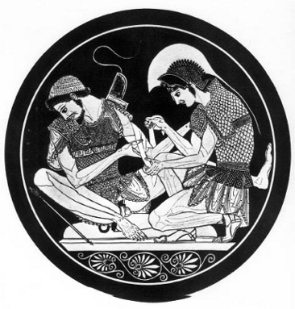
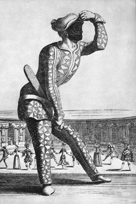

Aiskhylos’un tragedyasında, ilk insanlığın kendisine borçlu olduğu nimetleri sayan Prometheus ilk sırayı hekimliğe vermekteydi.
Şöyle der Prometheus:
“Hele, hasta düştüklerinde insanlar,
Ne yiyecek, ne içecek, ne de merhemleri vardı rahatlamak için:
Ölüp giderlerdi ancak.
İşte, ben öğrettim onlara şifalı ilaçlar yapmayı
Her türlü hastalıktan korunmalarına elveren.”
Uzun bir geleneğe dayanan Hippokrates, İ.Ö. V. yüzyılda hekimliğin Prometheus’u oldu.
Bu gelenek insanların şu ya da bu sanat loncasında iletilen ve bize göre İlyada’ya kadar uzanan tamamıyla laik ve pratik bir tıp bilgisidir. Ölümün hazır olduğu bu şiirde, yaraları açmayı, temizlemeyi, sarmayı, bazen ezilmiş kökten yapılma tozla yaraya kompresler yapmayı beceren birçok hekime, hatta sıradan dindışı kişilere rastlarız.
Homeros, yüz kırk bir yarayı çoğu zaman açık açık bilir ve tanımlar. İnsan vücudunun çok sayıda organlarını da bilir. Onun şiirinde tıp mesleği özgür ve herkesin saygı gösterdiği insanlarca yapılır. “Bir hekim, der, tek başına birçok insana bedeldir.”
İlyada’da büyücü hekimlik adeta hiç yer bulmaz. Bir peri masalı olan Odysseia’da büyüler, yabancıl ülkelerde karşılaşılan büyücü nympha’larca uygulanır.
Sonraki yüzyıllarda (İ.Ö. V. yüzyıl da dahil) doğu kaynaklı bir mistik akım güç kazanmıştır, halk bilincini sarmış, filozofların gözünde bile, bilimsel tıp araştırmasını karartmış gibidir.
Tesalya’daki Trikala (Tırhala), özellikle de Epidauros’daki Asklepios tapınakları hacılarla dolup taşar ve mucizeler artar. Rahiplerce adak biçiminde kaleme alınan Epidauros yazıları bize hep uyku halinde, rüyada bir tanrının müdahalesinden sonra gerçekleşen o mucizevi iyileşmeleri (bazı müminler bugün hâlâ iman yoluyla iyileştiklerinden söz ederler) yankısını getirirler. Birçokları arasında, pek de tuhafı olmayan bir tanesi şöyledir:
“Atinalı kör kadın, Ambrosia. Bu kadın tanrının tapınağına gelmiş ve sadece bir rüya gördükten sonra topalların ve körlerin sağlığa kavuşmalarının olanaksız olduğunu söyleyerek, tanrının şifalarından bazılarıyla alay etmiş, sonra tapınakta uyumuş ve bir rüya görmüş. Ona öyle gelmiş ki kendisine tanrı yaklaşmış ve onu iyileştireceğini söylemiş, ama aptallığının kanıtı olarak tapınakta tanrıya bir gümüş domuz sunması gerekiyormuş. Böyle konuştuktan sonra, tanrı hastalıklı gözü yarmış ve içine bir ilaç dökmüş. Ertesi gün kadın iyileşmiş olarak gitmiş.”
Empedokles Arınmalar’ında, Platon’un kendisi de birçok parçada, okuyup üfleme ve büyü hekimliğinin etkisine inancın klasik Yunan düşüncesine yabancı olmadığının kanıtını getirirler.
Lourdes-Epidauros yazıları, Hippokrates’e mal edilen yapıtların çağdaşlarıdır.
Günümüzde kimilerinin bazen yaptıkları gibi, Yunan hekimliğinin tapınaklardan çıkmış olacağını kabul etmek büyük bir hata olur. Yunanistan’da, akılcılık dönemi içinde birbirine koşut, ama tamamıyla ayrı iki hekimlik geleneği vardı.
Tapınakların çevresinde okuyup üflemeler, rüyalar, alametler, mucizeler –hepsi rahiplerin düşüncesine uygundur– çoğalırken, aynı dönemde tamamıyla laik ve bağımsız, öte yandan çok çeşitli eğilimlerde, ama asla boş inanca yönelmeyen ve içinde, eleştiri ya da şaka konusu bile olsa, şifa dağıtan rahibin ya da şifa dağıtan tanrı yorumcusunun görüntüsü bulunmayan bir hekimlik sanatının varlığını saptamak dikkate değer.
Bir yandan, hastalıkların maddi nedenlerini ve her hastanın özel durumunu aşan kuralları saptamayı gözeten düzenli bilimsel araştırma değil de, sadece tanrısallığın canının istediğince, keyfi olarak yaratılan mucizeler söz konusudur. Öte yandan, hekimin düşüncesinin hiçbir biçimde tanrıtanımazlığa sapmaksızın, Tanrıya ve yalnız Tanrıya bağlanacak her türlü açıklamadan, kararlı olarak kaçındığını görürüz.
Kutsal Hastalık Üstüne adı kitabın girişi bu bakımdan belirleyici ve açıkça cüretlidir. Yazar şöyle söyler: “Kutsal hastalık da denilen saranın tanrısal hiçbir yanının olmadığını, öbür hastalıklardan da daha kutsal olmadığını düşünüyorum. Doğası aynıdır. İnsanlar onun sıradan hastalıklara hiç benzemeyen sonuçlarından şaşırdıkları için cehalet sonucu, önceleri ona tanrısal bir köken ve neden göstermişlerdir. Daha sonra, hastalığın niteliğini ayırt etmeyi bilmediklerinden, ona birtakım tanrısallık özelliği eklemekte diretmişlerdir ve bilgisizce tedavisini yapmaktadırlar. Son derece dindar olduklarına ve bu konuda geri kalan insanlardan daha çok şey bildiklerine herkesi inandırmak isteyen tüm bu kişilerle, sara’yı, hastalığını kutsallaştıran kişileri, büyücüleri, sihirbazları, şarlatanları, sahtekârları, aynı türden insanlar olarak görüyorum. Onlar hastalarına yararlı hiçbir şey sağlamadıkları noktada yetersizliğin üstüne tanrısallığın örtüsünü atmışlardır.”
Bu Kutsal Hastalık kitabı, İskenderiye’liler döneminden bu yana Hippokrates Koleksiyonu adı verilen, yani eskilerce Kos’lu büyük hekime mal edilen yaklaşık yetmiş kitaplık bir toplamın bir parçasıdır. Gerçekten de bu yapıtlardan çoğu V. yüzyılın ikinci yarısı ya da IV. yüzyılın başında, Hippokrates’in sağlığında yazılmışlardır. Öte yandan ayırt edilmesi güç, bazıları ya Kos’lu ustanın kendi elinden ya da doğrudan çırakların elinden çıkmadır. Öbürlerinin yazarları ise tersine ya okulun ya da Kos’un eğilimlerine rakip eğilimli hekimlerindir.
Kısaca belirtmek gerekirse Hippokrates Koleksiyonu içinde üç büyük hekimler ailesini ayırt etmek mümkündür. Maceracı kurgular heveslisi filozoflar olan kuramcı hekimler vardır. Bunların karşısında Knidos okulu hekimleri yer alır; bu hekimlerde olgulara bağlılık o kadar büyüktür ki bunları aşacak durumda görünmezler; kuralcıdırlar. En sonu –ve bu üçüncü grup Hippokrates’in ve öğrencilerinin grubudur, bu gruba Kos okulu da denir– gözleme dayanıp, ondan, hem de yalnız ondan yola çıkarak ve tek derdi onu yorumlamak, onu anlamak olan hekimler vardır. Bu sonuncu hekimler deneysel düşünceden yanadırlar: Keyfi varsayımları reddederler, sürekli akla başvururlar.
Bu üç grup yazar da tapınak hekimliğine karşıdırlar. Ama bir bilim olarak tıbbı, yalnız bu sonuncu grup kurar.[7]
Kuramcı hekimler bizi uzun süre alıkoymayacaklardır. Bunlar çoğu zaman haklı olarak, bilgici denilen, tüm insan etkinlikleri ile ilgili çok geniş kapsamlı bir harekete katılan parlak söz cambazlarıdırlar.
Bu durumda bunların yöntemleri zaten sağlıklı bilimsel yöntemle ters düşer. Bu gruptan kitap yazarları, olguları incelemekle başlamak yerine, çoğu zaman felsefeden ya da dönemin inanışlarından alınma genel düşüncelerden hareket ederler: Bu düşüncelerden bazısını, çok keyfi olarak, açıklamaları gereken tıpla ilgili olgulara uygulamakla yetinirler. Bu düşünceler çoğu zaman, insan etkinliklerinde 7 sayısının baskın önemi gibi, basit önyargılardır.
İnsan Vücuduna Dair adlı kitabında, Yedi Aylık Cenin, ardından Sekiz Aylık Cenin yazıları şunu açıklar ya da açıkladıklarını iddia ederler: Eğer cenin yedi ayın bitiminde, sonra dokuz ay on günlük iken yaşayabiliyorsa, bunun nedeni her iki durumda da tam hafta sayısının yani otuz ve kırk haftanın dolmasıdır. Bu kitaplar kanıt diye şunları da öne sürerler: Normal bir insanın açlığa dayanma süresi yedi gündür; çocuklar dişlerini yedi yılda tamamlarlar; şiddetli hastalık nöbetleri, yarım hafta, bir hafta, bir buçuk hafta, iki hafta sonunda başgösterir.
Kimilerinin Hippokrates öğetisinin anahtarını görmekte direttikleri Yeller kitabı bir tıp kitabından çok, hem evrenin işleyişi, mevsimlerin değişmesi ilkesi olarak, hem de ateşli ya da salgın hastalıklar, nezleler, şişler, kan tükürmeler, su toplamaları, kanamalar, sancılar ve hatta esnemeler gibi bütün hastalıkların nedeni olarak havanın ve esintinin rolü hakkında süslü bir bilimsel yazıdır.
Koleksiyon’umuzun on kadar kitabı da Hippokrates’in uygulamalarından olabildiğince uzak, parlak ve kof olan şu bilgici hekimlikle ilgilidir. Yine de, bunlardan biraz iyice olanlarda, gerçek bir deneyimin ürünü gibi görünen doğru bilgilere de rastlanır.
Cinsiyetleri, ikizleri, sanatları akılda tutarak, su ve ateş karışımı olan insanın doğasını, ruhun doğasını ele almakla başlayan Rejim Üstüne adlı kitapta, hayretle Yenilebilir Otlar ve özellikleri hakkında çok iyi düzenlenmiş bir katalog buluruz. Bu katalogda özellikle, örneğin arpanın kabuklu ya da kabuksuz, haşlanmış ya da kavrulmuş yenilmesine göre; arpa ekmeğinin yapılır yapılmaz ya da biraz sonra, ya da mayalı ekmek olarak tüketilmesine göre; ekmeğin beyaz, esmer ya da mayalı olmasına göre tahılın özelliklerinin bir sıralaması vardır. Bitkiler üstüne sayfalar boyu yazılardan başka, kirpiyi de unutmadan öküzden başlayarak etlerin özellikleri hakkında yazılar vardır. Kitabın başındaki sözde felsefi ve söylevci eda yerini inanılmaz yemek listelerine bırakır; bu listelerin kenarında her gıdanın gaz yapma riskleri, peklik gideren, diüretik ya da besleyici etkileri eklenmiş bulunmaktadır. Giriş bölümündeki bulanık kuramlar (Aristophanes Bulutlar’da bu hekim türü ile alay eder) bu edayı yinelenen kusmaların yararı, kokuşmuş dışkıların yaratacağı tehlike ve gezintileri adet edinme hakkında öğütler seline aktarır. Bu arada şunu belirtelim ki yazar rejimlerini “insanların, günü gününe yaşayıp, sağlıkları ile uğraşmak için her türlü çalışmayı bir yana bırakmak olanakları olmayan çoğunluğu” için saptadığını söyler. Ondan sonra başka bir rejim hazırlar; bu rejimle hali vakti yerinde insanlara özgü “güzel buluş”unu yapmıştır. Bunu, kendisinden önce kimsenin düşünmediğini söyler. Ve burada adamımız “apaçık” bir saçmalığa düşer; övüngenliği kendisi için yararlı bulur: Epey bir zaman sabırla izlemiş olduğu bilimin yolundan, daha temel düzeyinde kesin olarak ayrılmıştır.
Yedi günlük ve yedi aylık saçmalıkları yanında, doğumdan hemen sonra çocuğun karşı karşıya kaldığı tehlikeler hakkında en azından doğru, hatta dokunaklı bir sayfa içeren Yedi ve Sekiz Aylık Ceninler Üstüne kitabının hakkını teslim edelim.
“(Doğumla) değişen beslenme ve solunum koşulları bir tehlike oluşturur. Gerçekten de bebekler zararlı bir hastalık etkeni madde alırlarsa bunu ağız ve burun yoluyla alırlar. Daha önce organizmaya ancak yeterli olan şey girerken, artık çok daha fazlası sızar; ve çocuk vücudunun yapısı nedeniyle olduğu gibi bu dışardan gelen katkı bolluğu nedeniyle de vücuttan dışarı atmak zorunda kalır: Vücuttan atışlar bir yandan ağız ve burun yoluyla, öte yandan bağırsak ve sidik torbası yoluyla olur. Oysa daha önceki evrede böyle bir şey olmazdı.
Demek ki çocukla türdeş olan ve onun rahim içinde alışık olduğu ve adeta içli dışlı olduğu hava ve amniose sıvısı yerine, çocuk, doğumdan itibaren kendine tamamen yabancı, sert, çetin, pek insanca olmayan şeyleri kullanır: O halde bunun sonucunda birçok acılar ve birçok ölümler olması kaçınılmazdır. Çocuk doğasına uygun olan ılık, nemli ana rahminde et ve sıvı ortamda olmak yerine, tıpkı yetişkin insan gibi kumaşlar giyinmiş olur. Önceleri göbek kordonu ananın çocukla bağıntılı olduğu tek yoldur. Çocuk da bu yoldan ananın aldıklarına katılır. Ona başka yollar kapalıdır ve ancak dünyaya geldikten sonra açılırlar; o anda kordon incelir, kapanır ve kururken, dış dünya yeni doğana açılır.”
Bu sırada, Hippokrates Koleksiyonu’nda, bu kuramcı, bu “bilgici tıp” hekimlerinin karşısında, Kos okuluna (Hippokrates’in okulu) rakip ya da denk Knidos okulu hekimliği yer alır. Derleme içinde bu Knidos hekimliğini en iyi temsil eden kitaplar İç Hastalıkları ve Hastalıklar’dır (bölüm II). Bunlara, Knidos okulunun sıkı takipçisi olmayan, bu okulun görüşlerini az buçuk andıran bir düzine kitabı da eklemek gerekir. Özellikle birçok kadın-doğum hastalıkları kitabı bunlar arasındadır.
Her tür aşırı genellemeye kaçmadan, herhangi bir “felsefi açıklamaya” kalkışmadan, kılı kırk yaran bir gözlem eğilimi ile dikkat çeken Knidos grubu, hastalıkların somut ve ayrıntılı tanılarını verme amacı güder. Bu okulda hekim, her zaman sanatının odağı olan konuya, yani Klinik gözleme indirgenmiştir. Demek ki bu Knidos’lular aslında pratisyen’dirler (uygulayıcı). Doğrudan gözlemin ötesine pek gitmezler, hastanın dediklerini bozmaktan –fazla yorumlamaktan– kaçınırlar. Olgulara karşı ufuklarını daraltan biraz dar kafalı bir kuralcılık vardır onlarda. Hastalıkları sınıflandırmakla yetinirler ve onları tedavi etmek için de, ancak gelenekçe sınanmış bir tedavi yöntemi uygularlar.
Bu hekimler tıbbi tartışmaya girişmezler. İki “salgı”nın, safra ve (phlegma) bağdokunun tutumuna indirgenmiş olan hastalığın nedenlerini araştırmazlar. Onlar için çözülemez gözüken her tür zor sorundan kaçarlar. Sonuç olarak, anlamaya çalışmazlar.

Patroklos’un yaralarını saran Akhilleus.
Sosias Kasesi. 500’e doğru.
Yaptıkları sınıflandırmalar, bölümleri artırır ve hastalıkların sayısı artmış gibi görünür. İç Hastalıkları ve Hastalıklar II, üç tür karaciğer yangısı (hepatit), beş dalak hastalığı, beş tifüs türü, dört böbrek hastalığı, üç tür anjin, dört polip, dört sarılık, beş su toplaması (hidropizi), yedi verem, çok sayıda beyin hastalığı sayar ve betimler.
Elbette, bu ayrımlardan bazıları, doğrulanmışlardır, hem de yenidir. Örneğin şiddetli eklem romatizması ile damla hastalığı denilen gut ayrımı. Ama bu ayrımların çoğu yeterince sağlam değildir ya da hayalidir.
Örnek olarak, anılan pneomon phitisiolyn (akciğer) hastalıklarından biri olan verem (phtisie) şöyle tanımlanmaktadır.
“Bu hastalıklar aşırı yorgunluktan meydana gelir. Arazlar aşağı yukarı önceki vakada olduğu gibidir, ama hastalık daha çok gerileme gösterir ve yazın azalır. Hasta balgam çıkarır, ama balgamlar daha koyudur. Öksürük yaşlılarda daha ısrarlıdır. Göğüs ağrıları daha şiddetlidir. Göğüste bir taş ağırlığı varmış gibidir. Sırt da ağrır. Deri nemlidir. En ufak çabada hasta nefes nefese kalır ve göğsü sıkışır. İnsan bu hastalıktan genel olarak üç yıl içinde ölür.”
Başka yerde, bir başka akciğer enfeksiyonu tanısı şöyledir: “Hastalık ilerledikçe, şişen bacaklar dışında, insan zayıflar. Tırnaklar geri çekilir. Omuzlar ufalır ve zayıflar. İnsan gırtlağını tüyle dolu gibi hisseder: Boğaz bir boru içinde olduğu gibi hırıldar. Susuzluk çekilir. Bütün vücut zayıflar. Bu durumda insan asla ertesi yıla çıkmaz.”
Tanım genellikle çok canlıdır. Bazı özellikler dikkati zorlar: Soluk almaya çalışan hasta “koşan bir at gibi burun deliklerini açar: Yazın havanın sıcaklığından yanan bir köpek gibi dilini dışarı çıkarır”. Doğru ve çarpıcı imgeler.
Knidos hekimleri sınıflandırmalarında hastalıkbilim konusunda bir tür taşkınlığa kapılmışlardır. Oysa bu tanım bolluğuna karşılık oldukça büyük bir tedavi yoksulluğunun olması dikkate değer. Tedavi her zaman bir iç söktürücü ilaç vermek, kusturmak (eskilere göre kusma ağız yoluyla iç söktürmedir), süt vermek, dağlamaktır.
Bununla birlikte, Knidos’lularca salık verilen bir tedaviyi de saptayalım. “Errhinler” merkezi kafada bulunan beyin kanaması veya sarılık, verem gibi hastalıkları iyileştirmek amacıyla hekim tarafından buruna değişik bileşimli maddeler yerleştirmekten ibaret tuhaf bir uygulamadır. Bu erhinler “kafanın söktürücüleri”dirler. Bunların kullanımı burun ile beyin arasında bir bağlantıyı varsayar. Ama biz de hâlâ beyin nezlesi demez miyiz?
Bir müdahalede bulunmadan önce, akciğer zarı boşluğunda varlığından kuşkulandığı bir sıvı toplanmasının doğru yerini anlamak gereğini duyan hekimin kullandığı akciğer muayenesi yöntemini de belirtelim. Bu konudaki metin, hekimin “hastayı sağlam bir iskemleye oturtup, bir yardımcıya hastanın ellerini tutturduktan sonra, onu omuzlarından tutup sarstığını, hastalığın sağda mı yoksa solda mı olduğunu anlamak için de kulağını böğürlere dayadığını” belirtir. Daha sonraki tıp geleneğince unutulan ya da bilinmeyen, Knidos’tan gelmesine karşın “Hippokrates kalıtı” denilen bu yöntem, Knidos hekimlerinin olguların gözlemlenmesinde yaratıcı becerisini çok iyi gösterir. Laennec eski kitaplara göre bu yöntemi kullandığını ve yararını gördüğünü söyler.
Bu arada, bu “Hippokrates kalıtı” bize eski Knidos hekimliğinin –bu tıbbın deneyciliği görenekçi demesek bile katıksız pragmacı olmak amacını güdüyordu– gözleme sıkıca tutunmasına karşılık, en önemlisi dinlemek olan birçok keşiflere de eriştiğini hatırlatır. Daha önce belirtilen dışında, bir başka yazı bunu doğrular. Hastalıklar II’nin yazarı “kulağını uzun süre böğürlerde tutan” hekim, diye yazar, “kaynayan sirkeninki gibi bir ses duyar”. V. yüzyılın hekimlerince uygulanan dinlemenin, kuşkusuz, bir Knidos keşfi olduğunu başka yazılar da doğrularlar.
Yine bu Knidos’lu ya da Knidos’u andıran kitaplarda birçok cerrahi müdahaleden söz edildiğini ve bu müdahalelere olanak veren aletlerin betimlendiğini görürüz. Burun poliplerinin tedavisi basit ve kabadır: Bazen ateşte kızdırılmış demirlerle dağlama, bazen bir “sinir ipi” ile donatılmış çubuk yardımıyla koparma yapılır: Hekim onu ayarlar ve sertçe çeker. Böbrek hastalıklarının dörtte üçünde böbreğin çizilmesi salık verilir: Yazarın açıklamasına göre, çizip yarma işi “organın en şişkin yerinde” yapılmalı ve “derin” olmalıdır. Göğüs kafesinde çizikler açmak daha yaygındır: Bunlar kaburgalar arasındadır ve hekim önce bir “dışbükey neşter” kullanır, sonra bir “ince uzun neşter” ile devam eder. Knidos’lular tarafından yapılan en cesur ameliyat, görmeyi engelleyen bir sıvı akıntısına, göze zarar vermeden çıkış yolu açmak için kafatasını delme ameliyatıdır. Sağlanan şifalar ve kullanılan iki çeşit delgi belirtilir.
Bu kadarı yeter, Knidos hekimliği bu meslekle uğraşanların yöntemlerini çok sayıda olguların sıkı gözlemleri üstüne oturtmak amacıyla büyük bir çaba harcadıklarını tartışmasız bir biçimde gösterir. Bununla birlikte, kabul etmek gerekir ki bu çaba sonuç vermez. Bu hekimlerin büyük değeri, doğrulanmaz felsefi varsayımların çekiciliğine kapılmamalarıdır. Onlar yalnız tıp geleneğince benimsenmiş olguları tanımak ve yaymak isterler; bu geleneğe kendilerinin derledikleri örnekleri eklerler. Yalnızca hastaları tanırlar: Onların işi, en çok sınanmış diye değerlendirdikleri yöntemlere göre hastaları tedavi etmektir!
Knidos’luların kurgu ve varsayıma karşı duydukları güvensizliğin, sanatlarının gündelik uygulamasında zekâya karşı, daha genel bir tür bilinçsiz güvensizliğe yol açtığı, kuşkusuz fark edilecektir. Onların işi tıbbı düşünmek değildir. Gerçekten de, onların yazılarının en ufak bir genel düşünce, düşüncenin biçemi olacak en ufak bir formül ürettiği çok seyrek görülür. Çok seyrektir, ama yok değildir. Bu düşüncelerden birini –belki de tek– belirtelim. Bu, hekimliğe gelişme olanağı sağlayacak yöntemle ilgilidir. Bu düşünceyle İnsan Vücudunun Bölümleri başlıklı kitapta karşılaşılır. Bu kitabın yazarı, Knidos’lu olmasa bile, en azından okula çok yakın bir hekimdir. Bu kitap şimdiye kadar rastladığımız en ilginç kitaptan kat kat daha ileridedir. Yazar şöyle söyler: “Vücudun doğası, tıbbi anlamdaki akıl yürütmenin hareket noktasıdır.” Bu, alışılmış Knidos deneyciliğini çok aşan bir cümledir.
Bu formülün yazarı, vücudun bütün parçaları arasında bir dayanışma olduğunu anlamıştır. Bu nedenle, belirttiğim yöntem düşüncesine dayanak, bir genel anatomi açıklamasını, giriştiği patoloji yazısının önüne geçirir. Demek ki, ona göre, hekimliğin insan organizmasının incelenmesinden daha sağlam temeli yoktur.
İnsan Vücudunun Bölümleri’nde geçen söz konusu cümleye ilişkin olarak bazı günümüz araştırmacıları Claude Bernard’a gönderme yapmışlardır. Bu kitabı yazan kimliği belirsiz alçakgönüllü pratisyen içinse çok büyük, hem de hak edilmiş bir onurdur bu. Knidos yanlısı başka hiçbir yazı, bunun gibi bir yakınlaşmaya kapı açmaz.
Yazarımızın anatomi açıklamasına gelince, bu açıklamanın daha çok eksiği vardır. Ama İnsan Vücudunun Bölümleri’ni yazan hekim duyu organlarının beyne bağlı olduğunu bilmez değildir; göz çeperleri ile kafa içi çeperlerini tam olarak saptamıştır; üst ana toplardamarın kalbe kanı götürdüğünü bilir. Buna karşılık, alt ana toplardamarı ana atardamar (aort) ile karıştırmış gibidir.
Hem zaten burada onun araştırma sonuçlarının doğruluğunu belirtmekten çok, patolojiyi anatomi bilgisi üzerine kurmak isteyen bir yöntemin doğruluğunu vurgulamak söz konusudur.
Koleksiyon’un asıl Hippokrates’ci yazarlarına yönelmek üzere Knidos’un dürüst pratisyenlerinden ayrılmadan önce, Kalp Üzerine başlıklı dikkate değer kitap hakkında birkaç söz edelim. Bu yapıt yer yer Knidos okulunun etkisinde kaldı: Yenilerde, büyük bir olasılıkla, Sicilya hekimlik okulunun bir hekimine, bilgin Philiston’a (Filiston) mal edildi. Bu usta İ.Ö. IV. yüzyılın başında Syrakusa’da (Sirakuse) ders veriyordu, Platon da onu yakından tanıdı.
Hiç kuşkusuz, Philiston elinde skalpel, bir insan kalbini incelemişti. Bu konuda Mısırlıların eski bir geleneğine başvuran Philiston, kendisinin bunu doğrulaması bir yana, özellikle onun bu organa ilişkin anatomik betimlemesindeki kesin doğruluk gerçekten de “ölü bir insanın kalbini çıkardığı”nı göstermektedir. Bilginimizin yaptığı şey yalnızca açımlama (teşrih) değil, aynı zamanda canlı hayvanlar üzerinde çalışmıştır. Aksi takdirde karıncıklar artık çarpmadığı halde kulakçıkların kasılmaya devam ettiğini nasıl keşfederdi?
Olay doğrudur, bu nedenle de sağ kulakçığa ultimum moriens adı verilir.
Peki doktorumuzun kalp hakkında edindiği anatomik bilgi nedir? O, kalbin “sinir dokusuyla değil, adale dokusu liflerinden” oluşan “çok güçlü bir kas” olduğunu bilir. Kalpte iki karıncık ve iki kulakçık olduğunu bilir; kalbin sağ ve sol bölümünü ayırt eder ve ikisi arasında doğrudan hiçbir iletişimin bulunmadığını bilir. Şunları da fark eder: “İki karıncık insan yaşamının kaynağıdır. Vücudun içini tamamıyla sulayan (iki) ırmak (Akciğer atardamarı ve aort) buralardan çıkar: Canın evi bu ırmaklarla sulanır. Bu kaynaklar kuruyacak olursa insan ölür.”
Ama Philiston daha da nazik gözlemler yapar. Dokuların farklı niteliğine göre toplardamarlar ile atardamarları ayırt eder. Kalbin sola yönelik olduğunu, ucunun yalnız sol karıncıktan oluştuğunu, bunun dokusunun ise sağ karıncığınkinden daha kalın ve daha dayanıklı olduğunu çok doğru olarak belirtir. En sonu –gözlemini şaheser noktasına çıkaran da budur– karıncıklarla kulakçıkları birbirine ulaştıran kapakçıklar ile akciğer atardamarı ve aort üstünde bulunan kapakçıkları kısaca, ama büyük bir açıklıkla betimler: Zarsı üç kıvrımdan oluşan bu sonuncular –s harfi ya da yarım daire biçimli kapakçıklar– atardamar ağzını sıkısıkıya bağlayacak durumdadırlar. Philiston akciğer kapakcıklarının kan basıncına, aort kapakcıklarından daha zayıf karşı koyduklarını saptar.
Bu kadar kavrayışlı bir gözlemcinin; dış yürek zarı içinde bulunan ve kalbi ıslatan sıvının kökenini anlamak için bir domuz üzerinde gerçek ama pek iyi gitmeyen bir deneye kalkışan bir bilginin, işte böyle bir bilginin kalbin fizyolojik işlevini açıklamak için saçma varsayımlarla yetinebilmesine insan herhalde hayret edecektir. Gerçek budur. Bu olay Kalp Üstüne kitabının yazarının Knidos’lu hekimlerin bilimsel titizlik düzeyini çok da aşmadığını gösterir... Ama bizim hayret etmemiz pek de “bilimsel” olmaz. Bilim garip bir gerçekler, “doğru önseziler” ve yanlışlar karışımı ile yavaş yavaş kurulur. Bilimin kuruluşu, uzun yüzyıllar boyunca, ancak bir Babil kulesi öyküsüne dönmüştür. Bilim adamlarının yanlışları, bilimin kuruluşunda, yine de, doğru önseziler kadar yararlıdırlar, çünkü bunlar birincilerin düzeltilmesini isterler.
Hippokrates Koleksiyonu hakkında bu kısa çözümlemenin amacı yeni doğan bilimin hep yalpalayan yürüyüşünü göstermeye yardımcı olmaktır.
Artık Koleksiyon’un odağında olan birkaç kitaba –yedi ya da sekiz– gelmiş bulunuyoruz; bunların geldiği soy hemen belli olmaktadır: Dâhinin çocuklarıdır bunlar. Bu kitapların yazarının kişi olarak Hippokrates olacağını kanıtlamak mümkün değilse de, en azından bu kitapların onun en yakın öğrencilerinin yapıtları oldukları rahatlıkla söylenebilir. Bunlardan kimilerinin Kos’lu ustanın olması da olasılık içindedir. Ama hangisi?.. Yapay sorunlara dalmayalım. Hippokrates’in neler yazmış olduğunu biliyoruz: Bazen bir eleştirmen, bazen bir başkası bugün ona sekiz yapıt mal etmektedirler ve bu yaratıcılığı ona atfeden bilginler en sakınımlı bilginlerdir.
Bunlar Havalara Dair, Sulara Dair ve Yerlere Dair, Tanı Hakkında, Ağır Hastalıklarda Rejim Hakkında, Salgın Hastalıklar I ve III kitaplar, Özdeyişler (ilk dört bölüm), en sonu, Koleksiyon’un başyapıtları olan cerrahlık kitapları Çıkıklar Hakkında ve Kırıklar Hakkında kaleme aldığı kitaplarıdır.
Hippokrates’in gençlik yıllarından (440 ya da 430), Eski Hekimlik Hakkında adlı yapıt ustaya yaraşır, ama herhalde başka bir elden çıkmadır. Bu yapıtta, olgunluk çağında Hippokrates’in hekimliği olacak gerçekçi düşünen hekimlik, akılcı hekimlik nadir görülür bir ustalıkla tanımlanmaktadır.
Bu büyük yapıtlar listesine daha ileride, V. yüzyılın sonu ve IV. yüzyılın başına doğru, Hippokrates’in bilimsel hekimliğini hekimlik insancıllığına kadar geliştirecek olan etik eğilimli bazı yapıtları –Yemin, Yasa, Hekim, Görgü Kuralları, Öğütler, vb.– eklemek gerekecektir.
“Hippokrates’in yaşamı bulutlarla örtülüdür”, diye yazar Littré; önce sadece en güvenilir olayları ele alalım.
Hippokrates Kos’da doğdu. Dorlar tarafından sömürgeleştirilen ada İon dili ve uygarlığına bağlıydı. Doğum tarihi eski bir yazara göre, genellikle olduğundan daha kesindir: Hippokrates, İ.Ö. 460 doğumluların, tam olarak Demokritos ile Thukydides’in çağdaşıdır. Homeros çağının büyük hekimi Asklepios’un soyundan geldiği iddasında olan hekimler ailesi Asklepiades’lerdendir (Asklipiadis). (Yalnız Homeros’dan sonra Asklepios da bir tanrı sayılmıştır.) Asklepiades’lerde tüm insan tıbbı ile ilgili bilgiler babadan oğula, ustadan çırağa iletilir. Hippokrates’in hekim oğulları, bir hekim damadı ve birçok öğrencileri oldu.
Kos okulu da denilen bu Asklepiades’ler loncası, V. yüzyılda, her kültür loncası gibi, bütün dinsel çerçeve ve gelenekleri korur: Örneğin, öğrencileri hocaya, meslektaşlarına, mesleğinin gereklerine sıkı sıkıya bağlayan yemin uygulaması böyledir. Ama loncanın bu dinsel niteliği belli bir ahlaki tutum içerse de doğruyu araştırmayı hiçbir bakımdan saptırmaz, kesinlikle bilimsel niyetini korur.
V. yüzyılda Yunanistan’da kurulan hekimlik, özellikle Kos’ta yeşeren hekimlik her türlü doğaüstülüğün düşmanıdır. Hippokrates hekimine bir ata aramak istenseydi ne rakibi, ne de doğa filozofunu göstermek gerekirdi. Eski Hekimlik yapıtının yazarı bunu çok iyi anlamıştır. O, bir sanat olarak hekimliği savunmak amacıyla tartışmacı bir yapıt yazar. (Kullandığı sözcük teknik ile bilim arası bir anlam taşır.) O, özellikle hekim ve filozof olan Empedokles’i suçlar; bu felsefe kuşkusuz dahiyane sezgilerle, ama aynı zamanda akıl için tuzaklarla doludur ve Empedokles “insanın ne olduğu bilinmeyince hekimliği öğrenmek olanaksızdır ve hastaları doğru olarak tedavi etmek isteyenin edinmesi gereken bilim işte budur” derken yanılmaktadır. Hayır, diye açıklar Eski Hekimlik yapıtının yazarı, tedavi sanatı ne Doğa, ne de mistik türden herhangi bir felsefe bilgisinden doğar. O, filozofun (ya da rahibin) hekimle her tür bağını reddeder. Hekimin atası, hekimi alçakgönüllü kılmak istediği gibi, onun gerekli ve olumlu, basit işlerle uğraşmasını ister, yani, ona göre bu işin aşçısı hekimdir.
Büyük bir kavrayışla, insanların ilkin gıdalarını, vahşi hayvanlar gibi çiğ yediklerini açıklar. Bu “sert ve kaba” rejimin sonucu o zamanlar, çok yüksek bir ölüm oranı ortaya çıkmıştı. Daha “ılımlı” bir beslenmeyi keşfetmek için uzun bir zaman gerekti. İnsanlar yavaş yavaş arpayı ve buğdayı ayıklamayı, taneyi öğütmeyi, unu yoğurmayı, fırında pişirip ekmek yapmayı öğrendiler. Toplamda, “daha güçlü gıdaları daha zayıf gıdalarla yumuşattılar, hamur yaptılar, kaynattılar, kızarttılar”... “insanın yaratılışı hazırlanan gıdayı özümseyecek durumda oluncaya ve beslenmesine, büyümesine ve sağlığına yarayıncaya” kadar bu işi sürdürdüler. Yazar bu konuda şu sonuca varır: “Şimdi bu araştırmaya ve bu buluşa Hekimlik adından daha doğru bir ad vermek mümkün müdür?”
Hippokrates yaşamı boyunca ateşli bir tutkuyla insana özgü bu mutfağa, hastalık kadar sağlık hekimliğine, sağlıksız bedenler kadar atletik bedenler hekimliğine de hizmet etti. Gezici ya da “perioditos” (döner zamanlı) hekimler geleneğini sürdürerek Yunanistan’da ve Yunanistan dışında çok yolculuk yaptı. Hippokrates’in yapıtlarında, Homeros döneminin o gezgin hekimlerinin uzunca bir süre kalmak üzere yeni bir ülkeye yerleştiklerini ve orada insanların adetlerini de inceleyerek hekimlik yaptıklarını görürüz.
Hippokrates sağlığında büyük bir üne kavuştu. Daha genç bir kuşaktan, ama sözcüğün geniş anlamında onun çağdaşı olan Platon, diyaloglarından birinde hekimliği öbür sanatlarla karşılaştırırken Kos’lu Hippokrates’i zamanın en büyük heykelcileri olan Argos’lu Polykleitos ve Atinalı Pheidias ile aynı hizaya koyar.
Hippokrates ileri bir yaşta, en erken İ.Ö. 375’te, yani seksen beş yaşında, en geç yüz otuz yaşında öldü. Antik gelenek ona uzun bir ömür biçmekte birleşir.
Bütünüyle insan vücudunun hizmetine adanmış bu yaşamdan sağlanan gerçekler bunlardır. Bunların yanında ustanın sağlığında bile bol bol efsane çiçeklenir. Doğal hekimlik işi hayret veren bir mucize gibi görünür ve çok saf bir melodinin zorunlu bir eşliği gibi efsaneyi doğurur. Bu öykülerden kimisi günümüzde hâlâ itibar görse de bu ara nağmeleri bir yana bırakacağız. Ünlü “veba” sırasında Hippokrates’in Atina’da bulunduğunun ve kenti mikroplardan arındırmak için yaptığı şeyin öyküsü bu ara nağmelerdendir; bütün bunlar hiçbir ciddi tanıklığa dayanmaz. Bu salgın hastalık hakkında birçok ayrıntı veren ve salgınla savaşan hekimlerden söz eden Thukydides Hippokrates hakkında tek söz etmez. Silentio (sessiz kanıt) kanıttır kuşkusuz, ama bu durumda tamamen kesindir. Aynı şekilde, Artakserkses’in (Artakserksis) armağanlarının reddi de katıksız efsanedir. Yine bu yapıtta daha yukarıda, keyf için, La Fontaine’i aktararak anıştırdığım Hippokrates ile Demokritos’un görüşmesi öyküsü de aynıdır.
Bize göre bu “öyküler”den son derece daha önemli olan şey düşüncedir, ustanın gerçek yazılarını tamamıyla inandırıcı iş ve düşüncelerle dolduran o hekimlik uygulamasıdır.
Bu metinlerden en başta dikkati çeken şey doyurulmaz bilgi iştahıdır. Hekim önce bakar ve gözü keskindir. Soru sorar ve notlar alır. Yedi kitaplık geniş Salgın Hastalıklar derlemesi hekim tarafından hastanın baş ucunda tutulan bir dizi notlardan başka bir şey değildir. Bu kitaplar rastlanan vakaları ve henüz sınıflandırmadan, bir tıbbi gezi düzensizliği içinde sunarlar. Metin sık sık, benzer vakalarla ilişkisiz, ama hekimin hep hareket halindeki düşüncesinin takılmasına göre yazmış gibi göründüğü genel bir düşünceyle kesilir.
Bu rastgele düşüncelerden kimisi hastayı muayene etme biçimiyle ilgilidir ve burada basit gözlem tasasını aşan ve bilim adamının düşünüş biçimini betimleyen, o keskin sonuca götüren belirti sözcüğü fışkırır. “Vücudu muayene bütün bir iştir: Görme, işitme, koklama, dokunma, dil, düşünme gerektirir.” Düşünme sözcüğü bizi hayran bırakan bir sürpriz, bir armağandır.
Hepsinin içinde ünlü Özdeyişler kitabı –Rabelais bu kitabı, 1531’de benzersiz bir başarı ile Yunanca metin üzerinden Montpellier’li öğrencilerine açıklıyor ve onun ilk modern baskısını yayınlıyordu–, bu Özdeyişler kitabı, çalışmanın harareti içinde yazılan, inceleme sırasında ışınlar gibi yayılan bu düşüncelerin derlenmesinden başka bir şey değildir.
Uzun uzun sınanmış bir yöntemin özü gibi yoğun olan, bu özdeyişlerden birincisini herkes bilir. “Yaşam kısadır, sanat uzun, fırsat uçucu, deneyim kaygan, karar zordur.” Başarısızlıkları, tehlikeleri, uygulamaya dayanan bilimle, güçlüğün ortasında cesurca koyulan tanıyla anında sökülen hastalık hakkında kazanımları ile hekimin tüm meslek yaşamı bu sözle özetlenir. Burada deneyim “kaygan” bir zeminde güçlükle kökleşmiş olan akıldan ayrılmaz.
Salgın Hastalıklar I’de hastanın muayenesi hakkında sürdürülen bir düşünce şöyledir:
“Hastalıklara gelince, onlara şöyle tanı koyarız: Bilgimiz herkeste ortak insan doğasına ve her bireyin kendi niteliğine; hastalıklara, hastaya; zerk edilen maddelere, bu maddeleri isteyen kişiye –çünkü bu iyi ya da kötü yönde bir değişime yardımcı olabilir havasının genel oluşumuna ve her havanın ve her yerin özel koşullarına; hastanın alışkanlıları, yaşam düzeni, uğraşları ve yaşına; konuşmalarına, davranışlarına, sessizliklerine, kafasını kurcalayan düşüncelere, uykusuna, uykusuzluklarına, rüyaların cinsine ve zamanına, ellerin düzensiz hareketlerine, kaşıntı ve gözyaşlarına; en şiddetli noktalara, dışkılara, idrarlara, balgamlara ve kusmuklara; hastada art arda meydana gelen hastalıkların niteliğine ve onların izlerine, yıkım ya da nöbet kaynaklarına; tere, üşütmeye, öksürüğe, hıçkırığa, geğirtiye, sessiz ve sesli gazlara, kanamalara ve basurlara dayanır. Dikkatle incelemek gereken işte bu verilerdir, bunlar olayı kavramaya olanak verirler.”
Ne çok şey istendiği fark edilecektir. Hekimin incelemesi hastanın bugünkü bedensel durumunu göz önünde tutmakla kalmaz; önceki hastalıkları ve onların bırakabildiği izleri de göz önünde tutar; hastanın öbür insanlar gibi bir insan olduğunu, onu tanımak için öbür insanları tanımak gerektiğini unutmaz; onun düşüncelerini yoklar. Hastanın suskunluğu, “sessizlikleri” bile hekime bilgi verir! Kavrama gücünden yoksun her kafanın, içinde kaybolacağı ağır bir iştir bu.
Bu tıp günümüz deyimiyle, açıkça psikosomatiktir. Daha yalın söylersek, insanın bütün varlığını ele alan (beden ve ruh) ve hem ortamına hem de geçmişine bağlı konumdaki insanın hekimliğidir. Bu geniş incelemenin sonuçları hastanın da, hekim yönetiminde, iyileşmesine beden ve ruh olarak tamamıyla katılmasını gerektirecek olan çok boyutlu tedavide kendini gösterecektir.
İncelemenin böylesi yaygın alanına, bir göz atmanın çabukluğu karışır. Çünkü hastalığın seyrini iyiye dönüştürme “fırsatı uçucudur”. “Hippokrates benzi”nin –bu beniz yakınlaşan ölümün belirtisidir– yüzyılları aşan ünlü tasviri ustanın gözünün keskinliğini ve güvenilirliğini gösterir.
Tanı Hakkında yapıtının yazarı şöyle der:
“Ağır hastalıklarda hekim şu gözlemleri yapacaktır: Önce hastanın yüzünü inceleyecek ve yüz görünümünün sağlıklı insanlarınkine ve özellikle hastanın daha önceki yüz görünümüne benzer olup olmadığına bakacaktır. En uygun görünüş bu olur ve yüz görünümü bundan uzaklaştıkça tehlike de büyür. Burun incelip uzadığı, gözler çukurlaştığı, yanaklar çöktüğü... Kulak memeleri aralandığı zaman; alın derisi kurumuş, gergin ve susuz, bütün yüzün derisi sarı ya da kirli, mor ya da külrengi olduğu zaman belirtiler bozulmanın son kertesine varmıştır... Eğer gözler ışıktan kaçıyorsa, istemeden yaşlarla doluyorsa, eksenlerinden uzaklaşıyorsa, biri öbüründen daha küçük oluyorsa... gözyuvası dışarı doğru fırlak gibiyse ya da çok hareketli veya yuva içine çok gömükse, gözbebekleri kuru ve donuksa... bu belirtilerin tümü kötüdür. Dudaklar gevşek, sarkık, soğuk ve hepten soluk ise yine ölümcül bir tanı konulacaktır.”
Tıpkı, Salgın Hastalıklar adlı kitabında ele alınan sayısız vakada olduğu gibi, bir hekimin, ne denli acelesi olursa olsun, “duygusalca” saptanmış bir şeyleri belirtmeme kaygısı taşıdığının anlaşıldığı bu parçada, hastanın şahsına gösterilen aşırı dikkat ve anında yapılan zengin içerikli gözlem, Hippokrates’in insanların içinde yaşadıkları ortamın koşullarına da aynı dikkati göstermesini engellemiyor.
Havalara Dair, Sulara Dair ve Yerlere Dair adlı kitaplar, yaşanılan ortamın, insanların sağlığı ile ilişkileri üstüne son derece yararlı araştırmalar sonucu ortaya çıkan çalışmalardır.
B. Bourgey bu konuda şunu saptar: (Antik) Hekim yalnız hastalarla ilgilenmez, bugün yapılanlardan daha büyük ölçüde sağlıklı insanla da ilgilenir, bu amaçla yaşamda tam bir sağlık koruması ister.” Yukarıda gördüğümüz gibi, Eski Hekimlik adlı yapıt, felsefe ya da safsatacılıkla dolu tıp sanatının, sağlıklı ve hasta insan için uygun olan beslenme konusunda yapılan bir araştırmadan hareketle yeniden keşfedilebildiğini açıklamaktaydı. Hippokrates bu araştırma yolunu izlemektedir. Sadece şifa dağıtan bir hekim olmak istemez, sahip olduğumuz şeyler arasında en değerlisi olan sağlık koşulları konusunda insanları bilgilendirmek ister. Hippokrates hastalıktan çok sağlık hekimidir.
Havalara Dair, Sulara Dair ve Yerlere Dair adlı kitaplarında birçok halkın yaşam tarzını inceler ve bunların şaşırtıcı bir açıklık ve belirginlikle betimlemesini yapar. Hippokrates her insanın yaşam tarzının tanınmasının hekim için de sağlık bilimci için de yararlı olduğunu bilir.
Hastanın şarap tutkunu, güzel yemeklere ve şehvete düşkün olup olmadığından ya da bu beden eğitimi ve hareketi söz konusu daha kolay zevklere yeğleyip yeğlemediğinden hekimin haberdar olmaması düşünülemez. Özellikle toplumsal ve en başta da fizik ortamın niteliği aydınlatacaktır hekimi. Hangi ülkede olursa olsun insanı, toplumsal çevresi ile birleştiren belirli ilişkileri, sebep sonuç ilişkilerini saptamada eşsiz bir kavrayış ve istenç gösterir. Birçok Avrupa ve Asya ülkesi onun araştırmasını bu doğrultudaki olaylarla besler.
Bunlardan her birinde ortamı inceler ve kökenlerini açığa çıkardıktan sonra daha iyi tedavi etmeye çalıştığı kimi ateş nöbetleri gibi bazı yerel hastalıklara ilişkin sonuçlar çıkarır tüm bunlardan.
Mevsimleri dikkatle inceler. Çeşitli hastalıklar üzerinde bunların etkisini ve ılımlarda ve gündönümlerinde, mevsim değişimlerinin etkisini araştırır. Kimi mevsimlerin “dengesiz”, deyim yerindeyse anormal bir niteliği vardır (Bu konuya başka bir kitapta dokunur). Mevsimler sanki yılın hastalıkları gibidirler. Onlar da topluluğun hastalıklarına yol açarlar. Hippokrates insanda yazın ara ara yükselen ateşlerin iyice azdığını bilmez değildir.
Hippokrates suları inceler, kimi suların, özellikle de gölcüklerden doğan bataklık suları ile çok soğuk suların organizma üzerinde yapabildikleri etkileri ele alır. Durgun sular dört günde bir gelen ateş nöbetine yol açarlar. Hippokrates bazı suları kaynatmayı salık verir...
Ve bütün bunlar, insanın maddi ortamına bağlı olduğu, toprağın niteliğinin bedenin niteliğini biçimlendirmeye katkıda bulunduğu, vs. gibi sıradan beylik iddialardan oluşmuş değildir. Tam tersine, Hippokrates için, yer kabuğunun bir bölgesinde yaşayan, filan ve falan etkiye açık, şunu yiyip bunu içen bir adamın belirli bir hastalığa yakalanabilir olup olmadığını öğrenmek söz konusudur.
Hippokrates Avrupa ve Asya ülkelerini dolaşıp, bu somut araştırmaya girişerek, asıl töre incelemelerini geliştirecek, toprağın ve havanın insanların ruhsal durumları üzerine belli ölçüde bir etkide bulunduklarını gösterecek duruma gelir. Önceleri budun ruhu (ethnopsychie) biçiminde adlandırılan işe girişir. İnsan, yaşadığı ortamla uyum halinde düşünüp davranmaktadır.
Bununla birlikte, bütün bunlar arasında, yazar toplumsal koşulların organizmanın gelişimi ve hatta yapısı üstündeki etkisini hatırlatmayı unutmaz. Bu konuda doğa (physis) ile gelenek-görenek (nomos) arasında sofistlerin iyi bildikleri ayrımı getirir.
Bütün bu düşünce ve ele alış biçimleri ve daha başkaları Havalara Dair, Sulara Dair ve Yerlere Dair adını taşıyan yapıtları, sağlam belgelere dayanan bir girişim ve belki de meteorolojik olaylar bir yana, tıp olguları ile coğrafya olgularını dikkatle ve aynı anda bir arada ele alıp incelemek üzere iki bin yılda becerilebilmiş tek girişim haline getirirler. Bu alçakgönüllü yapıtı, antik çağın bize bırakmış olduğu en özgün yapıtlardan biri yapan şey de budur. Bilimlerin bölümlerine kapanıp çalışmaya alışık kafalar Hippokrates’in tek bir amaca, insanlığın sağlığı amacına yönelerek bir araya getirdiği vakaların çokluğuna şaşıp kalmaktadır.
Ama Hippokrates’de gözlem, yarı yolda birdenbire yön değiştirmez.
Koleksiyon’un gerçekten Hippokrates’e ait yapıtlarında ilkin sadece bir gözlemler yığını gibi görünen güçlü bir istenç baskındır; derlenen olguları anlamak, onlara insanlara yararlı bir yön vermek istencidir bu.
Ağır Hastalıklar Rejimi’nin yazarı şöyle demektedir: “Tıp sanatının hangi bölümünde olursa olsun aklı kullanmak gerekir.” Hippokrates’e mal edilen kitapların çoğunda benzeri söylemler görülür. Gözlemin orta yerinde, “kısık” durumda bile olsa, irdeleme hep oradadır. Kos’lu bir hekimi Knidos’lu bir hekimden ayıran temel tutum budur.
Tanı’ya bakalım: Hekim bir kulak yangısı karşısındadır. Bu hastalığın birçok belirtilerini kaydeder. Ve özellikle şunu ekler: “Hekimin hemen ve ilk günden başlayarak dikkatini (zekâsını, aklını) bulguların tümü üstünde toplaması gerekir.”
Salgın Hastalıklar’a, şu klinik hekiminin toplamış olduğu klinik fişlere bir bakalım. Gözleme boğulmuş gibi görünen hekimin, bireysel vakayı genelleştirmeye çalışmak ya da irdeleyip geliştirmek amacıyla nihayet gözleminden sıyrılmak, daha doğrusu onu dayanak noktası yapmak üzere olduğunu görürüz. Nüksedebilir bir hastalık karşısında şunu belirtir: “Hekimin dikkatini depreşme belirtilerine yöneltmesi ve hastalığın bu anlarında kurtuluş ya da ölüm bakımından ya da en azından hastalığın epeyce iyiye ya da kötüye doğru yöneleceği kanısını belirleyici olacak olan nöbetleri anımsaması önemlidir.” Eyleme geçmek üzere akıl sürekli hizmetindedir.
Kafa Yaraları’na da bakalım: “Eğer kemik açıkta kalmışsa gözle görülmeyeni ayırt etmeye çalışmak ve kemiğin kırılmış ve ezilmiş ya da sadece ezilmiş olduğunu, ve bir hedra (dolaylı hasar) yaratmış olan yaralayan aletin ezilmeye ya da kırığa ya da hem ona hem öbürüne karışıp karışmadığını anlamak için akla başvurmak gerekir.” Akıl, kulağı kirişte bekler, gözlemi yorumlamaya hazırdır. Gerektiğinde kitapta bunun sayısız örnekleri aktarılır.
Böylece gözlemin zenginliği Hippokrates’i kavrama yetisine de önem vermekten uzak tutmaz. Yunancada düşünmek, akıl yürütmek anlamına gelen fiil sayısı kabarıktır. Hippokrates çoğu zaman bunlar arasından insan zihninin kesintisiz bir edimi olarak belirlediği anlamı temel alır ve düşünmeyi kısa zaman dilimlerini içeren bir bütüne yerleştirir. Öyle ki, düşünmek her zaman yüreğinde taşımak demektir. Hippokrates, gözlemin, duyu verilerinin, görmenin, dinlemenin, dokunmanın ona önerdiği olasılıkları düşüncesiyle beslemiş, içinde taşımıştır. Hippokrates tek başına güçlüklere karşı koyan ve sorunları çözen bu akıl sabrına sahiptir.
İşte birçokları arasında apaçık bir örnek. Bu örnek Knidos yöntemine göre Kos yönteminin yeniliğini açıkça gösterir. Bir cerrahlık kitabı olan Eklemler Hakkında kitabı vücut organlarının uğradıkları kol, burun, bacak kırıkları, kol kemiği, uyluk kemiği çıkığı, vb. gibi çeşitli kazaları sıralar. Kırık ve çıkıkları düzeltme olanağı veren çeşitli yöntemleri ayrıntılı olarak belirtir. Ondan sonra, bu yöntemler arasında bir seçim yapar ve bu seçimin gerekçelerini açıkça verir. Bu düşünülüp taşınılmış seçimi yapmayı ve nedenini göstermeyi bilmeyen hekimler –Knidos’lu hekimler– sert bir şekilde yargılanırlar. Hippokrates şöyle yazar: “Hekimler arasında usta ellere sahip olanlar vardır, ama aklı olmayanlar da vardır.” burada işaret edilen Knidos okuludur.
Hippokrates hekimliğinin temel amaçlarından biri tanı koymaktır: Bu, gözlem ile düşüncenin birliğinin güzel bir örneğini verir.
Bilindiği gibi Hippokrat yanlısı hekim, hastalığın nedenleri, komplikasyonları, sonu, sonuçları ile tüm hastalığı yeniden kurmak ister. Salgın Hastalıklar ve Tanı Hakkında kitabına göre, “olmuş olanı söylemek, olanı bilmek, olacağı önceden bildirmek” ister. İskenderiye okulu daha sonra bu üç işleme şu adları verecektir: Hastalığın öyküsü, yani geçmişin anımsanması; tanı, yani eldeki belirtilere göre hastalığın belirlenmesi; en sonu, teşhis, yani geleceğin öngörülmesi.
Tıp tarihlerinin çoğunda Hippokrates teşhisinin hakkı tam olarak teslim edilmez; onun hasta ve yakınları üzerinde hekimin otoritesini kurmaya yönelik bir araç olduğu söylenir. Kuşkusuz bu arada bunu Hippokrates Koleksiyonu da söyler. Teşhis hakkındaki bu hüküm Lozan’lı bir profesörün öğrencilerine söylediği şu hoş sözle birleşir: “Doğru bir tanıya siz kendiniz şaşarsınız. Etkili bir tedavi meslektaşı şaşırtır. Hastayı şaşırtan şey ise doğru bir teşhistir.” Nükteli bir hüküm.
Ama bu nükte yanılgıya götürür. Herhalde, teşhis, şarlatanın birinin çıkıp hastanın gözlerine attığı bir avuç toz değildir. Bir ölçüde hastaya bir güven verme biçimi ise, hekim için özellikle çok karmaşık bir soruna getirilen çözümdür.
Yatağındaki bir hasta, çözülmesi gereken müthiş bir düğümdür. Gerek eski gerek yeni bilinmeyen birtakım nedenler onu bu noktaya getirmiştir. Bu nedenler nelerdir? Hastanın sonu nereye varacaktır? Ölüme mi şifaya mı? Tanı –öte yandan bu uygun değilse hastaya bildirilmez– gözlemin hekimin önüne koyduğu olağanüstü dolaşıklığın onun düşüncesine göre düzenlenmesidir. Hippokrates, her hastalığın ortaya koyduğu büyük karmaşıklığına karşı çok duyarlıdır. Öte yandan hekim olarak bu olguların göreli değerini bilir. Örneğin, ölümcül bir son gösteren en kesin belirtilerin, adını verdiği kimi hastalıklarda tam tersi, hekimin aklından çıkarmaması gereken uygun belirtilerle çelişki yaratabileceğini bilmektedir. Hekim teşhisini çok sayıda belirtilerin tümüne bakarak koymalıdır: Yine bu teşhis varsayımsal ve hatta değişken diyebileceğimiz bir niteliği her zaman özünde barındırır. Hippokrates’in metinlerinde çok güzel bir formül birkaç kez değişik biçimlerde yinelenir. Bu formül şöyledir: “Yine de öbür belirtileri dikkate almak gerekir.” Düşünsel dürüstlük sözüdür bu, ama aynı zamanda umut sözüdür. Yaşam, insanın her zaman beklenmedik bir çare bulup onu kurtaramayacağı ve bunda her zaman başarılı olamayacağı çok karmaşık bir olaydır.
Doğruyu söylemek gerekirse, modern bilim adamları Hippokrates teşhisinin zayıflığını belirtmekten geri kalmazlar: Bu zayıflık hep hatırda tutulması gereken bir gerçekten, hekimin anatomi ve özellikle fizyoloji konusunda aşağı yukarı tam bilgisizliğinden ileri gelir. Örneğin, atardamarların hava ilettiğine inanmış bir hekim(!) hastalığın nedenleri hakkında, arzu ettiği gibi bir teşhis yapacak durumda olabilir mi? Yine de, bu konularda sahip olduğu az buçuk bilginin bunu yapmasına elverdiği bazı haller de pek tabiidir ki vardır. Hekim bunlardan daha da fazlasını öğrendiğinde ancak, teşhisi sağlamlaşacaktır.
Zaten, Hippokrates’e göre teşhis özünde sona ermez. Hippokrates tedaviyi yaratır (ve bu anlamda tedavi modern tanıya denk düşer). Oysa, tedavi konusunda, Kos okulu hekimleri dışındaki hekimler hayallerine ya da rastlantıya teslim olmuşlardır. Bunlar ya keyfi kuramsal düşüncelere dayanmakta ya da sözde gelenekçe sınanmış tedavileri denetimsiz kabul etmekteydiler. Ağır Hastalıklar Rejimi’nin yazarı bu kara cahil hekimlerin yol açtıkları çelişkili tedavilerden alayla söz eder. Şöyle yazar:
“Hekimlerde böylesi sorunları tartışma alışkanlığı yoktur. Tartışsalardı da kuşkusuz bunun çözümünü bulamayacaklardı. Ama bu yüzden halk arasında tüm hekimlik mesleğine büyük bir güvensizlik bulaşmaktadır; öyle ki insanlar hekimliğin düpedüz önemsiz bir sanat olduğuna inanacak hale gelmektedirler. Gerçekten de ağır hastalıklarda pratisyenlerin, birinin en iyi dediği reçeteyi, öbürü berbat bulacak kadar birbirlerinden ayrıldıkları görülmektedir. Öyleyse, bu açıdan hekimliği, aynı kuşu sola uçuyorsa hayra alamet, sağa uçuyorsa şerre alamet diye alan bilicilerin sanatı ile karşılaştırmak gerekir... Ama aynı konular hakkında başka bilicilerin taban tabana zıt düşünceleri vardır. O halde diyorum ki demin ortaya attığım sorun çok güzeldir ve tıp sanatına ilişkin konulardan çoğuna, hem de en önemlilerine değinir; çünkü bu sorun iyileşmeleri konusunda bütün hastalar için, sağlıklarını koruma konusunda sağlıklı kişiler için, güçlerini artırma konusunda beden eğitimi çalışmaları yapanlar için çok şey yapabilir; bir kelimeyle istenecek her şeye uygulanır.”
Parçada haklı olarak Molière’i akla getiren, bir sağduyu vardır. “Çok güzel” birtakım sorunlara yol açan böylesi bir hekimliğe karşı yazarın öfkesi, coşkusu ve alaycılığı arasında ortaya çıkar.
Verilecek reçetelerde izlenecek en iyi yöntemi bütün açıklığıyla gösteren başka metinler de vardır. Şimdi bu ayrıntıya girmeyelim. Daha çok, bu konuda Hippokrates Koleksiyonu’nda kendini gösteren yönlerden birini işaret edelim: Bu yön aynı zamanda Hippokrates düşüncesinin doruk satırlarından biridir.
Hippokrates kurmakta olduğu bilimin sınırlarının farkındadır. Bu sınırlar hem insanın doğası hem de evrenin doğasınca saptanmıştır. Mikrokosmos-insan; makrokosmos-evren; bunlar birbirinin aynasıdırlar. Bu yönde düşünme ve meramını açıklama biçimine doğal dünyaya ilişkin hiçbir efsanevi anlayışı dahil etmez. Sadece ve sadece temel gerçekçilik vardır bu düşünce biçiminde. Hippokrates hekimliğin hastalık ve ölüme karşı kazanımlarının aşılmaz engelleri olduğunu teslim eder.
Hippokrates öte yandan, birbirine dayanan bu iki dünyanın –mikrokosmos ile makrokosmos– hem bilimin sınırlarında hem de şifanın yolunda olduklarını kabul eder. İnsanda şifa doğanın yardımı sayesinde ve önce insan organizmasının çalışmasıyla meydana gelecektir. Hippokrates’in amacı –bu amaç önce alçakgönüllü gibi görünür– doğanın iyileştirici etkisine yardımcı olmaktır. Salgın Hastalıklar’ın beşinci bölümünde şunları okuruz: “Doğa hastalıkların hekimidir. Bu eyleme yol açan da doğanın kendisidir. Doğanın düşünmesi gerekmez... Yalnızca dil görevini yapar. Başka pek çok şey de böyle olur. Bizden bir şeyler öğrenmeyen doğa yine de gerekeni yapar.” Başka bir yerde de şu sözü okuruz: “Doğa öğretmensiz iş görür.”
Görevi insanı sağlıklı halde tutmak olan hekim doğal dünyada ve insan vücudunda yararlı olduğunu bildiği birtakım yardımcılar arar kendine ve bulur. Olağan hasta tedavisi, “Sağaltıcı doğa”nın etkisine doğru bir yol, belirli her duruma belli bir yol açmaktan ibarettir. Çünkü örgütlü insan bedeni kendine özgü etkin bir canlılık olarak şu özelliğe sahiptir: Kendiliğinden birçok çareler bularak, kaynaklarına başvurarak yaşamda tutunmak. Bu nedenle işin erbabının vücudun bu sağaltıcı etkinlikleri hakkında sahip olduğu bilgi sayesinde yaptığı katkı hiç de önemsiz değildir: Zira bu katkının belirleyici olduğu haller vardır.
Bu sağaltıcı doğa görüşü, kimi tarihçilerin düşündükleri gibi, hiçbir biçimde, doğayı kendi başına harekete bırakacak, tembel bir hekimliğin itirafı değildir. Tam tersine bu görüş –yineleyelim– gözlemlenen gerçeklere dayanan bir bilgidir; buna göre her insan organizması bir biyolojik güçler, olası yok oluşlarına karşı doğal olarak kendini koruyan güçler deposudur. Hekim, yaşamı oluşturan ve canlandıran bu güçlerin işleyişini bildiği ölçüde insana yardımcı olur. Bilgi-eylem, Yunan uygarlığının klasik temalarından biri işte budur.
Vücudun bazı savunma süreçleri kendiliğinden işler. Ama bu savunma oyununa, onun iç güçlerini kavramış hekim tarafından yardım edilebileceğini de düşünmek yanlış olmaz. Doğanın bazen desteklenmeye gereksinimi vardır: Hippokrates hekimden, organizmanın çağrılarına ve son güçlerine karşılık vermeye her zaman hazır olmasını ve karşılaşılan yetersizliklere çare bulmasını ister.
Bu konuda klasik örnek yapay solunum uygulamasıdır. Oksijenden yoksun kalan akciğer çoktan solunum ritmini artırmaya girişmiştir bile. Kan, içindeki alyuvarlarını artırır. Doğal ve kendiliğinden bir savunmadır bu. Yapay solunum uygulayan hekim, doğanın boşluklarını doldurmaya çalışmaktan başka bir şey yapmaz: Teslim olması yakın bir vücudun son yedeklerini çalıştırır.
Doğa ile işbirliği yapan bu hekim hiç yoktan “sağlık yaratma” iddiasında olan cahil keramet sahibinden daha yüce ve daha akıllıca bir görev yapıyor mudur?
“Kaygan deneyim” alanında bile “uçucu fırsatı” kollayan hekim, alçakgönüllü ama yararlı bir yaşam yapımcısıdır. Şair imgelerini nasıl yoktan değil de gerçeklikten hareketle yaratırsa, hekim de sağlıklı insanı, hastanın vücudunda bulduğu şeyden, gözlediği ve yararlandığı insan doğasından hareketle yaratır.
Prometheus ateşi yokluktan değil Güneşten söküp alır.
Hippokrates hekimliğinin sıkı yöntemleri böyledir; Hippokrates’in doğadan ve insan vücudundan çıkardığı hekimlik mesleğinin felsefesi böyledir. Bu bölümde Hippokrates’in elde ettiği sonuçlardan çok onun kurduğu bilimin yöntemleri üstünde durdum. Çünkü bilim alınan sonuçlar yığınından çok yöntemlerin doğruluğu ile gelişir.
Bunca zihinsel yücelik, düşünmede bunca alçakgönüllülük ve soyluluk Hippokrates’in öğrencilerinden istediği ve kendisinin de uyguladığı ahlaki davranışla tamamlanır ve görkemli bir biçimde taçlanır.
Yukarıda Koleksiyon’daki Yemin, Yasa, Hekim, vb. gibi etik türden metinleri belirttim. Bunların kuşkusuz Hippokrates’in yaşlılık döneminde ya da onun ilkeleri ve uygulaması doğrultusunda ölümünden az sonra yazıldıklarını hatırlatalım. Antik bir adalet düşüncesine, yazılı ve kuşkusuz Okul’a ait ilksel bir biçim veren Yemin’in bu yüzden hem Koleksiyon’un en eski, hem de güncel biçimiyle, V. yüzyıldaki Hippokratesci büyük kitaplardan biraz daha genç bir metni olduğunu belirtelim. Yemin aynı zamanda etik metinlerin en önemlisidir.
Hekimlerin mesleklerine başlarken ettikleri bu yeminin tam çevirisi aşağıdadır.
“Apollon hekim, Asklepios, Hygieia (İgia) ve Panaceia üzerine, bütün tanrı ve tanrıçalar üzerine, onları tanık göstererek ant içerim ki aşağıdaki yemini ve sözü elimden geldiğince ve aklım yettiğince yerine getireceğim.
“Bana hekimlik sanatını öğreten kimseye, beni var edenlere karşı gösterdiğim saygıyı göstereceğim; varımı yoğumu onunla paylaşacağım; çocuklarını kardeş bileceğim ve hekimliği öğrenmek isterlerse, bunu onlara ücretsiz ve yükümlülük beklemeden öğreteceğim.
“Aldığım öğütleri, sözlü dersleri ve gördüğüm öğrenimi oğullarıma, ustamın oğullarına ve hekimlik yasasına bir söz ve yeminle bağlı çıraklara duyuracağım, başka hiçbir kimseye duyurmayacağım.
“Hastaları her türlü kötülük ve zarardan uzak tutmak amacıyla, yönetimlerini elimden geldiği ve aklımın yettiğince, onların yararına sürdüreceğim.
“Benden istense bile kimseye zehir vermeyeceğim ve bunu öğütlemeye kalkışmayacağım. Aynı şekilde hiçbir kadına düşük için ilaç vermeyeceğim.
“Nefsime egemen olarak ve dürüstçe yaşayacağım ve sanatımı öyle icra edeceğim.
“Mesane taşı ameliyatı yapmayacağım, bunu bu işle uğraşan kişilere bırakacağım.
“Girdiğim ev nasıl olursa olsun, bilerek işlenen her türlü kusurdan, her türlü ahlaksızlıktan ve özellikle ister özgür ister köle olsunlar, kadınları ve çocukları baştan çıkarmaktan kendimi koruyarak, oraya hastaların iyiliği için gireceğim.
“Susmanın çok titiz ödevim olduğunu düşünerek, işimi yaparken gördüğüm ya da duyduğum, işimle ilgili olmasa bile ve açıklanmaması gereken her şeyi saklayacağım.
“Eğer bu yemine sadık kalır ve onu ihlal etmezsem, bana yaşamımdan ve mesleğimden mutluca yararlanmak, insanlar arasında her zaman saygı görmek nasip olsun; eğer bu yemini çiğnersem ve andımı bozarsam yazgım tersine dönsün.”
Modern devletlerin çoğu, hekimlerin yeminli olmalarını ister. Ama yemin sözcüğünün kullanılması da çoğu zaman yanlış olmuştur. Hekim genellikle yalnızca şerefi üstüne söz verir ya da bir vaatte bulunur. İnançların değişmesi, bilimdeki gelişmeler Hippokrates’in eski metnini içeriğinden aşağı yukarı boşaltmış gibi görünmektedir.
Benim ülkemde, Vaud kantonunda hekim, yürütme gücünü kullanan Bakanlar Kurulu’nun temsilcisi olan bölge valisi karşısında şu sözlerle görevine başlar:
“Meslek ahlakının temel ilkelerini ve mesleğimi düzenleyen yasa hükümlerini okuyup öğrendikten sonra, bunlara sadakatle uymaya şerefim üzerine söz veriyorum; şerefim üzerine, bu mesleği onun yardımsever amacının gerektirdiği bilinç, onur ve insanlıkla yapmayı vaat ediyorum.”
Artık zehir vermeyi yasaklama diye bir şey yoktur; ilacın içerebildiği zehirli maddelere egemen olan bugünün hekimi gün boyu “zehirli” ilaç yazar. İsteniliyorsa çocuk düşürmeyi yasaklama artık yoktur: Bu çocuk düşürme, bir olgudan ayrı, yasal hale gelmiştir. Geriye meslek ahlakı hükümlerince öngörülen meslektaşlara karşı saygı kalır. Geriye hem 9 Aralık 1952 tarihli Vaud Sağlık Yasası, hem de 321. maddesi “meslekleri gereğince kendilerine emanet edilen tıbbi bir sırrı açıklayacak olanlar hapis ve para cezası ile cezalandırılabilirler” hükmünü içeren İsviçre Ceza Yasası ile korunan –hiç değilse kuramsal olarak– meslek sırrı kalır.
Örnek diye alınan Vaud vaadinde geriye özellikle, Hippokrates’in hastalarına gösterdiği ve öğrencilerinden istediği sevginin uzak ama gerçek bir yankısı gibi olan şu biricik “yardımsever amaç”ın izlediği o güzel sözcükler, bilinç, onur, insanlık kalır.
Hâlâ Cenevre Yemini başlığını taşıyan Cenevreli hekimin andı, Hippokrates yeminine daha yakın durmaktadır. Bu ant siyasal makam karşısında değil, Hekimler Birliği Genel Kurulu önünde söylenir.
Sözleri şöyledir:
“Hekimlik mesleğinin üyeleri arasında sayılırken:
“Yaşamımı insanlığın hizmetine adama konusunda ciddi yükümlülüğü alıyorum.
“Hocalarıma karşı borçlu olduğum saygı ve minettarlığı koruyacağım.
“Sanatımı bilinç ve onurla yapacağım.
“İlk tasam olarak hastamın sağlığını düşüneceğim.
“Bana emanet edilecek kişinin sırrına saygı göstereceğim.
“Tıp mesleğinin onurunu ve soylu geleneklerini tüm olanaklarım ölçüsünde sürdüreceğim.
“Meslektaşlarım kardeşlerim olacaktır.
“Ulus, ırk, parti ya da toplumsal sınıf düşüncelerinin görevim ile hastam arasına girmesine izin vermeyeceğim.
“Gebelikten itibaren insan yaşamına mutlak saygıyı koruyacağım.
“Tehdit altında bile, tıbbi bilgilerimi insanlık yasalarına karşı kullanmayı kabul etmeyeceğim.
“Bu sözleri şerefim üzerine, serbestçe ve resmen veriyorum.”
Bu Cenevre Yemini Eylül 1948 tarihinde, Cenevre’de, Dünya Hekimler Birliği Genel Kurulu tarafından kabul edilmiştir.
Hippokrates’in Yemin’i, Yasa’sı ve öbür etik kitapları daha bazı açıklamalar gerektirir.
Önemli olan konu şudur: Hekime mesleğinin uygulaması konusunda verilen bilgiler, derlenen ve yeminle pekiştirilen bu yazılar içinde yer alıyorlarsa, hiçbir zaman birbirleriyle çelişme halinde değillerdir, tam tersine Koleksiyon’un öbür kitapları ile, özellikle de Hippokrates’e mal edilebilenler ile doğrulanmışlardır. Demek burada basit eski kullanım sıralamasına bakmalıyız ve bu sıralama Ustanın düşüncesine uygun olarak ve onun hatırasına tam bir bağlılık içinde yapılmıştır.
Demek oluyor ki, Salgın Hastalıklar’ın yedi kitabında, gördüğümüz gibi, tanıtma endişesi olmaksızın, öylece yazılıp terk edilmiş ve bir bölümü kuşkusuz Hippokrates’in elinden çıkma bu notlarda, Yemin tarafından yasaklanan uygulamalardan hiçbirine rastlanmaz; bu kitaplar toplamı okulun uygulamalarının lekesiz aynasıdır.
Başka bir özellik şudur: Etik yazılar, en büyük dikkati, hekimin tutumuna, onun maddi ve manevi davranışına gösterir. Hekim evlere ancak “hastaların iyiliği için” girer. Bu hasta kim olursa olsun toplumsal durumu ne olursa olsun, ister bir kadın, ister bir erkek, ister bir çocuk olsun, ister özgür durumda, ister köle olsun –hasta hekim için yalnızca acı çeken bir varlık, sözcüğün özlü ve kökeninde var olan anlamıyla “sabreden”[8] bir kimsedir. Onun ilgiye, hekimin saygısına hakkı vardır, hekim de kendi kendine saygı göstermesi gerektiği gibi ona da saygılı davranır.
Görgü’nün yazarı şöyle yazar: “Hekim, benzerlik gösterdiği filozof gibi, çıkar gözetmemeyi, ihtiyatı, utanmayı alışkanlık haline getirir; alçakgönüllüdür; ağırbaşlı, yargısında sakin, soğukkanlı, yaşamında dürüsttür... Gerekli ve yararlı olan her şey hakkında bilgilidir, boş inançlardan kurtulmuştur.”
Hekim Hakkında başlıklı kitabın yazarı da hekimin nefsine hakim olması ve “ellerini temiz tutması...” gerektiğini söyler. “Hekimin yaşama biçimi saygıdeğer ve kusursuz olacaktır ve böylelikle o herkesin karşısında ağırbaşlı ve iyiliksever olur.”
Onun davranışı tek kelimeyle “dürüst insan”ın davranışıdır ve “namuslu kişilere karşı kibar” olduğu belli olur. Hastanın karşısında “ne sinirli, ne aceleci”dir. “Aşırı keyifli değildir” ama hiçbir zaman asık suratlı da değildir.
“Hekimin hastaları ile ilişkileri” diye devam eder aynı yazar, “gerçekten de önem taşır”, ama sağduyu (doğruluk), ve tutum da “adalet” gerektiren ilişkilerdir.
Dürüst bir insan olarak bu hekimin en gerekli erdemlerinden biri, hem düşünsel hem de ahlaki bir erdem olan alçakgönüllülüktür. Hekim yanılabilir: O bunun farkına varır varmaz, hem de hastasının önünde, hatasını, eğer “ufak hatalar” cinsindense, kabul edecektir. Hekimin, uzun süren ve bilgili ustaların yönetiminde geçen eğitimi genellikle onu büyük yanlışlardan alıkoyacaktır. Hekim ölüme de yol açabilen ağır yanlışlar yaparsa, bunları hastasının yanında kabul etmemelidir, aksi takdirde hastanın huzurunu kaçırır. Gelecek kuşaklardan hekimleri bilgilendirmek amacıyla hekim bunları yazılı olarak bırakmayı yeğleyecektir.
Öte yandan, alçakgönüllülük hekime, eğer bir güçlükle karşılaşırsa, meslektaşlarına başvurma görevini yükler. Öğütler yapıtında şunları okuruz: “Deneyimsizliği yüzünden olayı anlamayan hekim, başka hekimlerin yardımını isteyecek, hastanın durumu konusunda onlara danışacak, onlar da çözüm bulmakta kendisine katılacaklardır... Bir hastayı birlikte gören hekimler ne birbirleriyle kavga ederler ne de karşılıklı gülünç olurlar. Bunu yeminde belirttiğim için, bir kanıt öne süren hekim, bir meslektaşının kanıtında kıskançlık uyandıramaz. Böyle yaparsa ancak kendi düşünüşünün zayıflığını gösterir.”
Nihayet, yine alçakgönüllülük endişesiyle, hekim birtakım gösterişçi yöntemler kullanmaya, bunları hastaya kabul ettirmeye razı olmayacaktır. Çünkü “O kadar gürültü patırtı, birçok gösteriş ve birçok laftan sonra, hekimin sonunda yararlı hiçbir sonuca varmaması ayıp olur.” Hekimin, her durumda, en az gösterişli şifa olanağını seçmesi gerekir. Bu, hem bir “gönül insanı”na, hem de bir “sanat insanı”na yakışacak tek davranıştır. İki terim birbirini doğurur, çünkü hekimin sanatı insanların hizmetindedir. Öğütler bunu unutulmaz bir deyişle hatırlatır: “İnsan sevgisinin olduğu yerde sanat sevgisi de vardır.”
Demek ki hekimin alçakgönüllülüğü başta sanatına karşı gösterdiği sevgiden doğuyor; hekim gerçekten de sanatının gereklerinin ne denli büyük olduğunu bilir; gücünün sınırlarını öğrendiği gibi, mesleğini yaparken de her gün bu gereklerin farkına varır. Ama ikinci olarak, tedavi ettiği insanları sevdiği için de, korumak istediği yaşamın değerli ve karmaşık niteliği hakkında derin bir duygu beslediği için de alçakgönüllülük bu yaşamın sorumluluğunu taşıyan hekime, kendisini kabul ettirir.
İnsan sevgisi ile sanat sevgisi onun hümanizminin iki kutbudur.
Bitirirken şimdiye dek daha yeni işaret edilen son bir özellik üstünde duralım.
Bütünüyle Hippokrates Koleksiyonu, çok sayıda kitaplarının hiçbirinde, köleler ile özgür kişiler arasında asla en ufak bir ayrım yapmaz. Hepsi de hekimin dikkati, saygısı ve tedavisi bakımından aynı haklara sahiptir. Yalnız köleler değil, İ.Ö. V. yüzyılın sonuna doğru sayıları Hellen dünyasında her yerde artmaya başlayan ve yaşamları genellikle kölelerinki kadar çetin olan yoksullar da aynı haklara sahiptirler.
Hippokrates (o, notlarında hastalarının mesleğini nadiren belirtir) tarafından kaleme alınmamış olan Salgın Hastalıklar’ın kitaplarında hekim tarafından belirtilen mesleklerden bazıları şunlardır: Dülgerler, kunduracılar, tabakhaneciler, çırpıcılar, bağcılar, bahçıvanlar, maden işçileri, taş yontucular, ilkokul öğretmenleri, meyhaneciler, aşçılar, seyisler, sporcular, çeşitli kamu çalışanları (bunlar kamuda çalışan köleler olabilir), vb. Birçok hallerde meslek belirtilmemiştir. Ayrıca, özgür ya da köle birçok kadın vardır. Görülüyor ki bu meslekler basit ya da çok basittirler.
Belirtilen işçilerden birçoğunun köle olmaları olasıdır. Birkaç kez bakılmıştır bu hastalara.
Kesin olan şu ki hekim için köle, yabancı ya da yurttaş hiçbir farklılık yaratmaz. Öğütler’in yazarı “yabancı ve yoksul hastanın özel bir dikkatle tedavi edilmesini” bile ister.
Bu “öğüt”ün tutulduğu, hem de uzakta tutulduğu olur. Salgın Hastalıklar’ın bir tek kitabında, gelişigüzel ele aldığımız beşincisinde, hasta fişlerini yeniden okursak, yüz hastadan on dokuzunun, belki de daha fazlasının (çoğu zaman buna karar vermek güçtür) kuşkusuz köle (on iki erkek, yedi kadın) olduklarını görürüz. Birçoğu Tesalya’da bulunan Larissa’da, V. kitabı yazan gezici hekimin orada kaldığı oldukça uzun süre içinde tedavi edilmiştir. Hepsi titiz ve genellikle uzun süren bir tedaviden yararlanmış gibidirler. Köle kadınlardan biri, uzun zamandır bilincini yitirdikten sonra, bir beyin hastalığının kırkıncı gününe doğru ölür.
Bu on dokuz köle arasından alınan, bir seyis çocuğun durumu şöyledir: Çocuk on bir yaşındadır ve atın bir çiftesiyle sağ gözünün üst kısmında, alnından yaralanmıştır. Hekim şöyle yazar: “Kemik sağlam değilmiş gibi görünüyor ve ordan bir parça kan çıkmış. Yaralının kafatası tırtıklı ekleme kadar genişçe açıldı. Sonra kemiği açık tutarak tedavi edildi ve bakım önce kırılan kemik bölümünü kuruttu. Yirminci gün, kulağın yanında, ateş ve titreme ile birlikte bir şişme başladı; şişlik gündüzleri daha belirgin ve daha acılı idi; ateş çıkışı bir titremeyle başladı; alın ve tüm yüz gibi gözler de şişti; en çok etkilenen kısım başın sağ tarafıydı; ama şiş sol tarafa da geçti. Bu yüzden can sıkıcı bir şey olmadı; sonuna doğru ateş daha az sürdü; bu durum sekiz gün devam etti. Yaralı kurtuldu: Dağlandı, bir müshil aldı ve şişlik üstüne merhem konuldu. Kazalarda yaralanmalar çok görülür.”
Bu V. kitaptaki hastaların yakalandıkları hastalıklar çok çeşitlidir. Örneğin: Anjin, sağırlık, kangren ya da kuru kangren, zatülcenp, zatürree, verem, ishaller ve öbür mide ve bağırsak bozuklukları, karın uru, sidik torbası bozuklukları, safra bozuklukları, taşlar, ateşli iştahsızlık, yılancık ve daha birçokları. Çok kez de kazalardan ya da gebelikten doğan yaralar söz konusudur. Hekim genel olarak ancak ağır hastalıklara bakmış ya da fişlerine geçirmiş gibidir: Önemsiz yaralarla ilgilenmez.
Ölüm oranı çok yüksektir. V. kitapta bakılan on dokuz köleden on ikisi ölür. Ama ölüm oranı hastaların tümünde kölelerinkinden çok daha az değildir. Salgın Hastalıklar’ın I. ve II. kitaplarında kayıtlı kırk iki olaydan ölümle sonuçlanan yirmi beş olay vardır. Hıristiyanlık öncesi çağın sonunda bir hekim Salgın Hastalıklar’ı okumak gerektiğini, çünkü bunların “ölüm hakkında düşünme” fırsatı yarattıklarını söyler. O çağın insanları patır patır sinekler gibi ölüyorlardı! Başka türlüsü nasıl olabilirdi ki? Anlattığımız gibi, teşrih gelenekçe yasaklanmış olduğu için, anatominin temelini bilmeyen hekimlik henüz ölümlerin “doğal” oranını aşağı çekecek durumda değildir. Bu doğal mı? Ben bundan doğal ortam ile bireyin kendi bedeninin insan türüne oranını anlıyorum. Bununla birlikte, hekimlerin, Molière’in yapıtlarından başka yerlerde “Biz bütün bunları değiştirdik” diyebilecekleri bir gün gelecektir.
En azından hekimlik, bu kadar tehlikeli bir biçimde ölüp giden onca insan arasında hiç değilse ayrım yapmaz. Hekimlere göre köleler de insandır. Burada sonuç olarak belirtilmeye değer çok şaşırtıcı bir gerçek vardır. Kuşkusuz, köle sahibinin, bu insan sermayesini korumakta çıkarı olabilir. Ama öyküsünü anlattığım o on bir yaşındaki çocuğun değeri nedir ki? Önemsiz, herhalde hekim giderlerinden azdır.
Öte yandan, hastanın toplumsal durumu ne olursa olsun hekimin notlarını kaleme alma tarzı aynıdır; Hippokrates’in hümanizmini belirleyen şu bilimsel ilgi ve insan sevgisi karışımını açıklar gibi görünür.
Sonraki yüzyılların iki büyük filozofunu, onların bu “canlı aletler” diye niteledikleri, kölelere karşı sarf ettikleri aşağılayıcı sözlerini bir düşünün!
Şaşırtıcı bilgi açlığı ile, hep akıl yoluyla canlı tutulan araştırmanın zorluğu ile, ve nihayet acı çeken insana karşı özverisi, ayrım gözetmeden bütün insanlara sunduğu şu dostluğu ile Hippokrates hekimliği V. yüzyıl hümanizminin en yüksek düzeyine erişir ve hatta, son noktada, korkmadan o dönemin yaşama ve düşünme biçimlerini aşar.
Tüm insanlara, onlar için güçlükle araştırdığı beden sağlığını sunan bu hekimlik, bilgisizliğin karanlıklarında, insan için vaatlerin en güzelidir.
Üstelik, Bacon’un sözünü de unutmayalım (bellekten aktarıyorum): “Hekimlik bildiğinden fazlasını yapacak güçtedir.”

İtalyan komedyasında soytarı (arlequin).